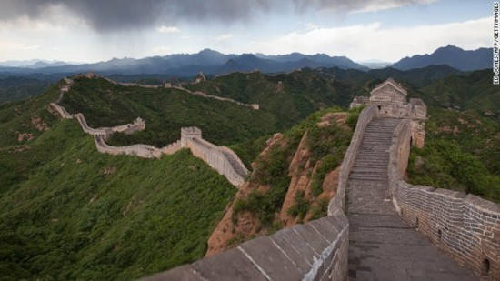
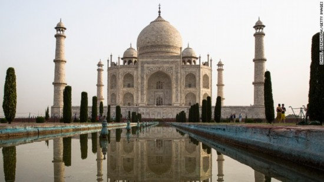
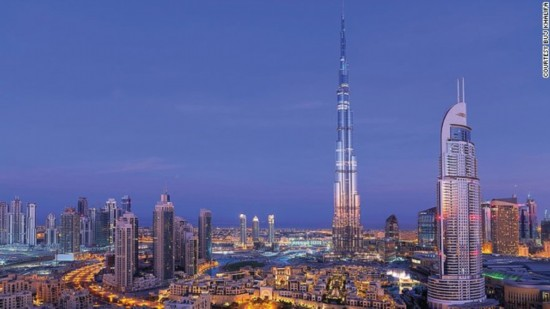
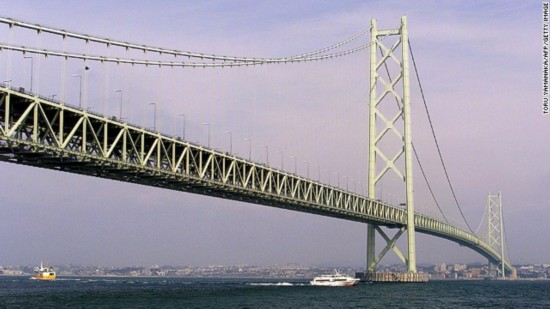
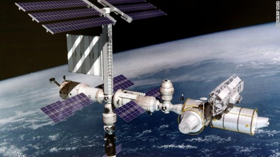
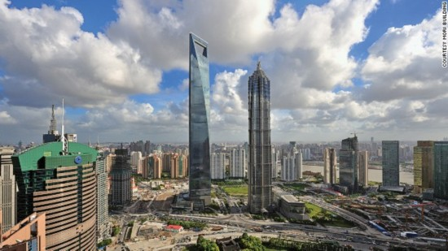
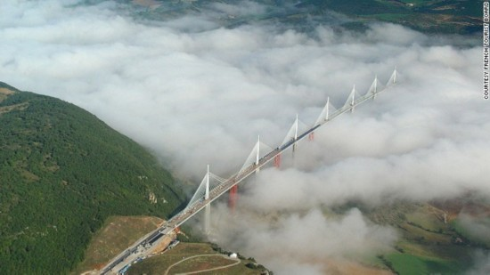
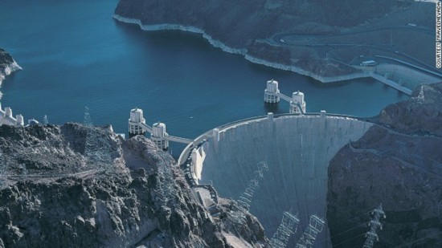
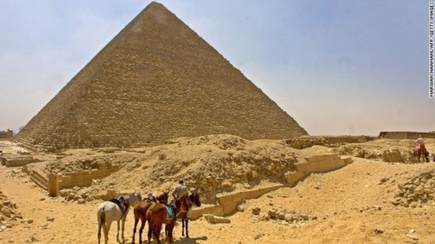
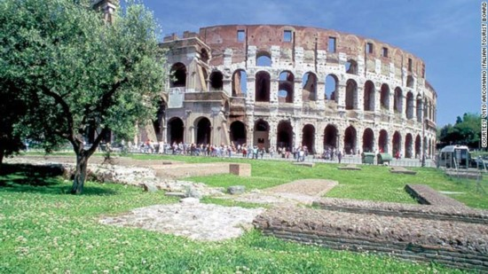

塞戈维亚输水道（西班牙）
该水道是伊比利亚半岛上保存最完好的古迹。它的特色即是那44道双桥拱（单独数即为88道），以及79道单拱门，总共是167道。它建于罗马土拉真时代，沿用至今，把奥弗里奥河的水引向塞戈维亚镇。桥以2.4万花岗岩构成，是在完全没有使用石灰的情况搭建而起的。167座桥拱每一座都高过9米。该水道是于公元50年建成的。 
万里长城（中国）
万里长城长达8850千米，最终建成耗时长达2000年。始建于公元前475年。在明朝（公元1368――1644年），长城进行了大改造，新增了�t望塔、城垛、大炮，有些高于海平线达980米，无法想象用于粘固石头的粘合物竟是糯米粉。竣工时间为公元前204年。 
泰姬陵（印度安格拉）
用于装饰泰姬陵外部的半珍贵和珍贵的各种石头多达28种。修建泰姬陵耗时20年，起于1632年，止于1653年，但具体日期不详。这个建筑是由拉贾斯坦邦采石厂的白色大理石修建而成的，它清晨呈粉色，白昼白色，月夜金色。从任何一个方向看，它都是对称的。此陵墓用以纪念蒙兀儿时期帝国皇帝沙贾汗最宠爱的王妃。于1653年建成。 
哈利法塔（阿联酋国迪拜）
哈利法塔高达828米，既是世界上最高的建筑也是世界上最高的无支撑结构。工程师面临着多方面的挑战，其中一个是猛拍塔子的狂风。对此，他们进行了超过40多个风洞测试，这不止为了决定着风对建筑的影响，而且考验着建造所用的起重机。哈利法塔于2010年1月4日建成。 
明石海峡大桥（日本）
明石海峡大桥有200万工人参与，耗时10年建成。它连接了日本的大陆城市神户和淡路岛上的岩谷。在大桥建成以前，通往两个城市的唯一方式就是渡船。但是，这条航道经常遭受大风暴，1955年两艘渡船倾翻，造成168人遇难，为了平息民愤，政府决定修建这座大桥。它长达1991米，是世界上最长的吊桥，于1998年4月5日竣工。 
国际空间站
国际空间站的修建将耗资1000亿美元（约人民币6100亿元），有来自15个国家的10万人员参与其中。它是最非同寻常的建筑，建于距地球354千米远的地方。维护其所面临的问题远不是一把铁锤、一颗螺丝可以解决的。太空防护服上一个小小裂缝都意味着瞬间死亡。该空间站仍在建设中。 
上海环球金融中心(中国)
上海环球金融中心顶部呈现一个梯形空洞，在101层设计了一条玻璃悬空观光长廊以减小风压。当其在2008年建成的时候，就以492米的高度成为世界第二、中国大陆第一高的建筑。它最显著的特征即是它的梯形设计，以此来减小风压，这为其赢得一个“开瓶器”的昵称。游客可以在观景台购买到与建筑相同结构的梯形开瓶器。该建筑于2008年7月17日建成。 
米诺高架桥（法国）
米诺高架桥在欧洲是桥板面最高的一座桥，它的最高点距离塔恩河河面270米。米诺高架桥是世界上最高的桥，桥总高343米，比埃菲尔铁塔还高。这座高架桥横跨塔恩河河谷，它的建成缓解了巴黎和西班牙的交通压力。它耗费3.2亿英镑（约人民币29.3亿元），但是它的使用年限达120年，真是物有所值。竣工时间2004年12月16日。 
胡佛水坝（美国）
工人们把涂了煤焦油的布帽子作为安全帽。这是一个保护工人头部极有效的方法，所以承包方六大公司购买了同款的安全帽。胡佛水坝在距离科罗拉多河上方221米的地方建成，修建它的同时建成了米德湖。它是西半球最大的人工湖，为拉斯维加斯和附近小镇提供水源。坝底厚达210米，最高点厚达13米。它是重力坝，因其坝基靠重力避免其坍塌。竣工时间1936年3月1日。 
吉萨金字塔（埃及）
吉萨金字塔是世上最高的人工建筑物，有3800年的历史。负责金字塔的建造者肯定需要很多茶歇时间使自己时刻保持极高的积极性。该金字塔是由230万石块组成，其中最大的一块在国王的密室，重量在25至28吨之间，是从800千米外的阿斯万运来的。总共使用了550万吨石灰岩、8000吨花岗岩、50万吨灰泥。当时的人们是怎样做到搬动每一块石块的，专家不得而知。竣工时间公元前2504年。 
罗马圆形大剧场
罗马圆形大剧场容纳5万观众，是罗马帝国建造的最大竞技场。据估计，它的外墙（189米长，156米宽）最开始使用了10万立方米凝灰石。其中一些石头后来被用作修建圣彼得堡的长方形会堂以及周边纪念碑。竣工时间公元80年。
{kind=link}
{kind=link}
{kind=link}
{kind=link}
{kind=link}
{kind=link}
{kind=link}
{kind=link}
{kind=link}
{kind=link}
{kind=link}